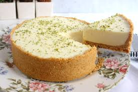

Torta de Limão
Ingredientes
- 200g de bolacha maria triturada
- 100g de manteiga derretida
- 1 lata de leite condensado
- 3 limões (suco e raspas)
- 3 ovos (gemas e claras separadas)
- 100g de açúcar
Modo de Preparo
- Pré-aqueça o forno a 180°C.
- Misture a bolacha triturada com a manteiga derretida e forre uma forma de torta com essa mistura.
- Em uma tigela, misture o leite condensado, o suco e as raspas dos limões, e as gemas.
- Despeje essa mistura sobre a base de bolacha.
- Bata as claras em neve com o açúcar até formar picos firmes e espalhe sobre a torta.
- Asse por 15-20 minutos ou até que o merengue esteja dourado.
- Deixe esfriar antes de servir.